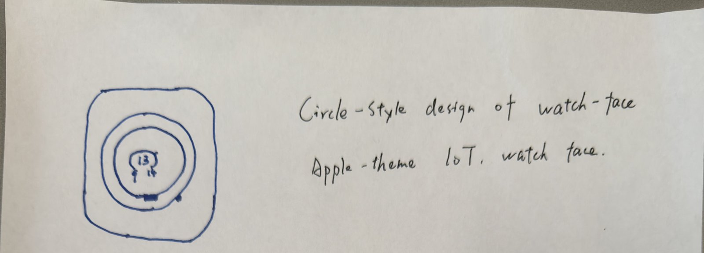
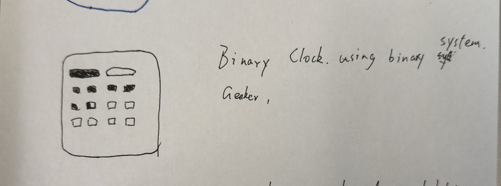
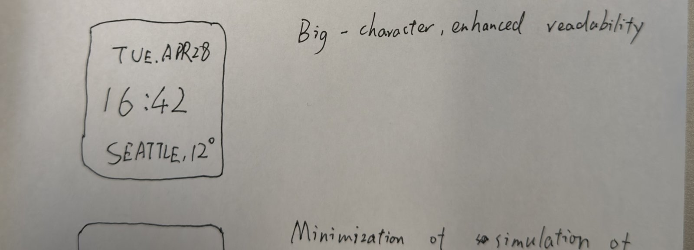
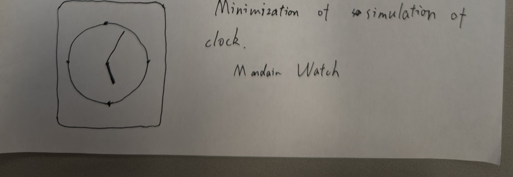
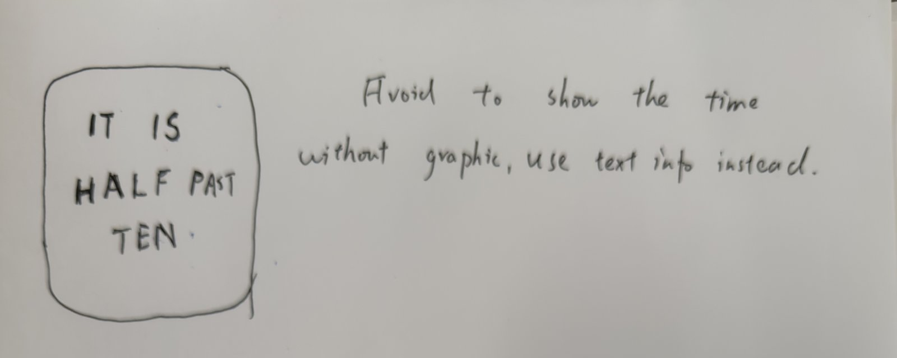

Sketches I explored (1–5: smartwatch face designs)





Why I chose Sketch 3 (Big-character)
Of the five smartwatch face explorations, Sketch 3 had the strongest payoff per pixel: it shows time, date, location, and weather without any hand-decoding (unlike the IoT concentric rings or the binary clock) and without sacrificing density (unlike the Mandain minimal analog or the pure word clock). The hierarchy is clear — big time in the middle, supporting info above and below — which maps perfectly onto how people actually scan a watch face.
Design decisions in the final clock
1. Hierarchy by size. The HH:MM time is rendered at 120pt — roughly 6× the size of the date and weather rows. This guarantees the primary information is read first, with peripheral vision.
2. Continuous progress arc. A thin cyan arc sweeps the inner
border every minute. I switched from p.second() +
p.millis() to a single Date.now() % 60000 source to
eliminate a one-frame jump on the seconds rollover.
3. Day/night background gradient. The watch face background interpolates between four anchor colors (deep navy at midnight, cool blue at dawn, neutral at noon, warm purple at dusk). This adds a subtle "time of day" cue beyond the numeric display.
4. Click to cycle face themes. Clicking the watch face cycles between three layouts — BIG TIME (default), DATE FOCUS (large weekday + day number), and WEATHER FOCUS (large temperature). This mirrors how Apple Watch users customize complications, and lets the same data structure serve different glance contexts.
Iteration log (peer feedback + self-testing)
- Iteration 1 (self-testing): First version showed only HH:MM with no surrounding context. The watch felt like a digital alarm clock — usable but generic. Added the date row above and location/weather row below to mirror real smartwatch information density.
- Iteration 2 (self-testing): Added a progress arc using
p.second() + p.millis()/1000. Noticed a one-frame jump every time seconds rolled over. Switched the entire animation toDate.now() % 60000— single time source, perfectly smooth. - Iteration 3 (peer feedback): A classmate said the watch "looked the same at 9 AM and 9 PM." Added the day/night background gradient that interpolates between four anchor colors across 24h, so an evening screenshot now reads visibly different from a morning one.
- Iteration 4 (peer feedback): Reviewer asked "what if I care more about the date than the time?" Added the click-to-cycle face themes — BIG TIME / DATE FOCUS / WEATHER FOCUS — so the same watch can serve different glance contexts.
Self-reflection / future work
Real geolocation + live weather API (currently mocked at Seattle 12°C). Animated transitions between face themes. The day/night gradient is intentionally subtle, but a more visible background motif (sun/moon icon) would make the temporal cue stronger for low-attention glances.